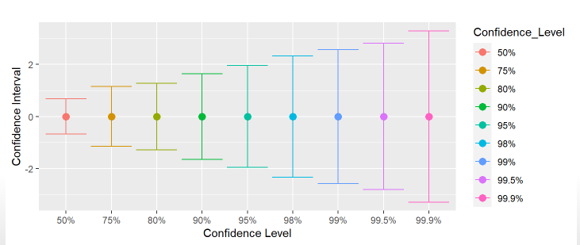

Hasta ahora …
Pilares de la inferencia
Curva normal

Error estándar
\[\sigma_{\bar{X}}=\frac{s}{\sqrt{N}}\]
Diferencias
Desviación estándar
\[s=\sqrt{\frac{\Sigma(x_i-\bar{X})^2}{N-1}}\]
Magnitud que expresa la dispersión en torno al promedio en la escala de la variable
Error estándar
\[\sigma_{\bar{X}}=SE=\frac{s}{\sqrt{N}}\]
Magnitud que equivale a la desviación estándar de los promedios de varias muestras
… y más de Error Estándar
se calcula no solo para el promedio, sino para distintos estadísticos como correlación, regresión, desviación estándar (con distintas fórmulas para cada uno)
como está expresado en unidades estándar de variación, permite construir rangos de probabilidad basados en la distribución normal
estos rangos de probabilidad se conocen como intervalos de confianza
Intervalos de confianza
El error estándar, por su asociación a las áreas de la curva normal, se relaciona con niveles de probabilidad
Si sumo y resto error(es) estándar al promedio puedo construir un rango de valores probables en que se encuentra el parámetro poblacional -> intervalo de confianza
Por ejemplo, si tengo un promedio=10 y SE=1, puedo decir que aproximadamente el 68% de los casos se encuentran en el intervalo entre 9 y 11 (basado en distribución normal)
Intervalos y Z
- Recordemos que el puntaje Z es una medida de cuántas desviaciones estándar se encuentra un valor respecto al promedio
\[Z=\frac{x_i-\bar{x}}{s}\]
- Y para construir un intervalo de confianza:
\[IC=\bar{x}\pm Z*SE\]
Pero en términos de inferencia: ¿Es suficiente un intervalo (rango) que cubra el 68%?
Error y confianza
- Un 68% implica que la probabilidad de que el promedio esté fuera de ese rango (o probabilidad de error) es de un 32% (100%-68%)
¿Es aceptable este nivel?
Esto es equivalente a preguntarse cuánto error estoy dispuesto a tolerar como resultado de una inferencia estadística
Y se asocia al concepto de nivel de confianza
¿Certeza o precisión?
No hay certezas, solo probabilidades
Las probabilidades se asocian a un rango (intervalo) que garantice un cierto nivel de confianza
Ideal: un rango estrecho (preciso) y un nivel de confianza alto (certero)
¿Qué es preferible?
el promedio de ingresos se encuentra entre 500.000 y 5.000.000, con un 99% de confianza, ó
el promedio de ingresos se encuentra entre 700.000 y 710.000, con un 65% de confianza
“con un 100% de probabilidad te aseguro que tu nota se encuentra entre 1 y 7”
Intervalos vs confianza

Margen de error
El margen de error es el valor en que puede oscilar el promedio en el intervalo.
Es decir, equivale a lo que se suma/resta al promedio para generar el intervalo, pero en general se expresa en términos de porcentaje
Ejemplo margen de error
- Para nuestro intervalo al 95%, el margen de error equivale a qué porcentaje es 4.900 en relación al total. Aplicando regla de 3 para porcentajes:
\[Margen_{error95}=\frac{SE*1.96*100}{\bar{x}}=\frac{4.900*100}{800.000}=0.612\]
- Por lo tanto, el margen de error en este caso es de \(\pm{0.6}\%\)
Recomendaciones
Ver simulación de intervalo de confianza para promedio muestral